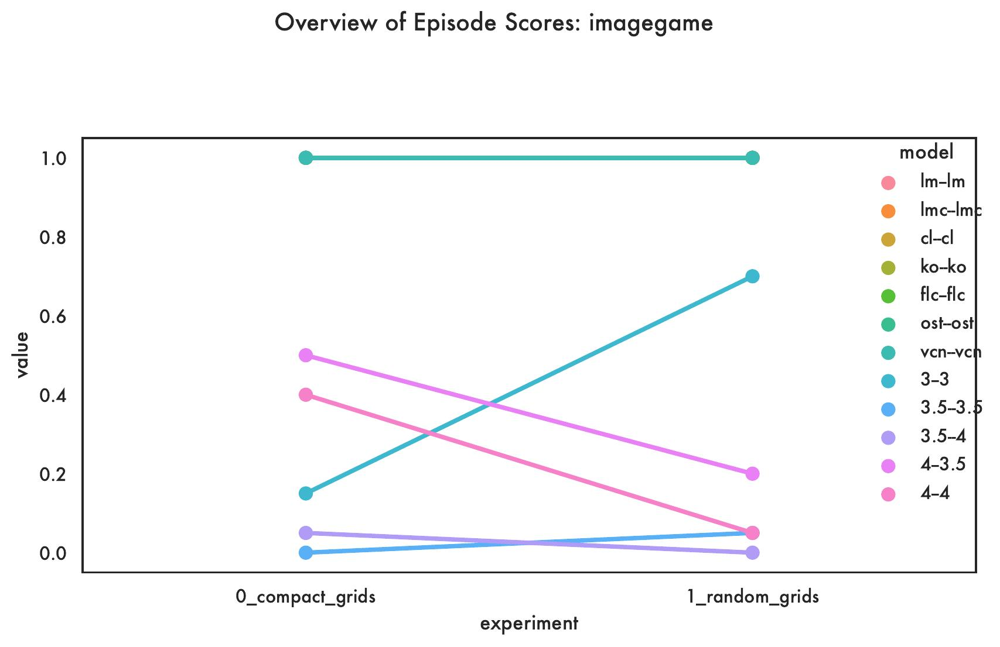
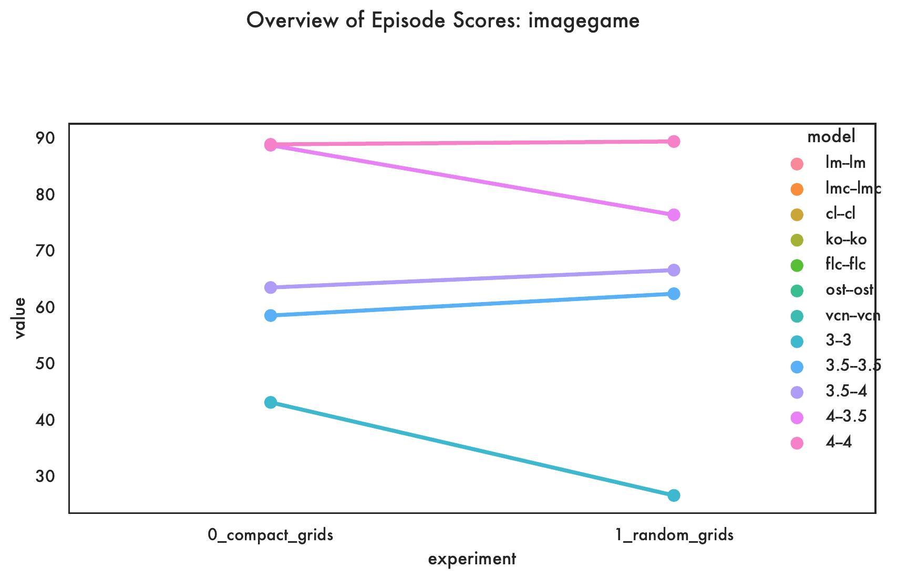
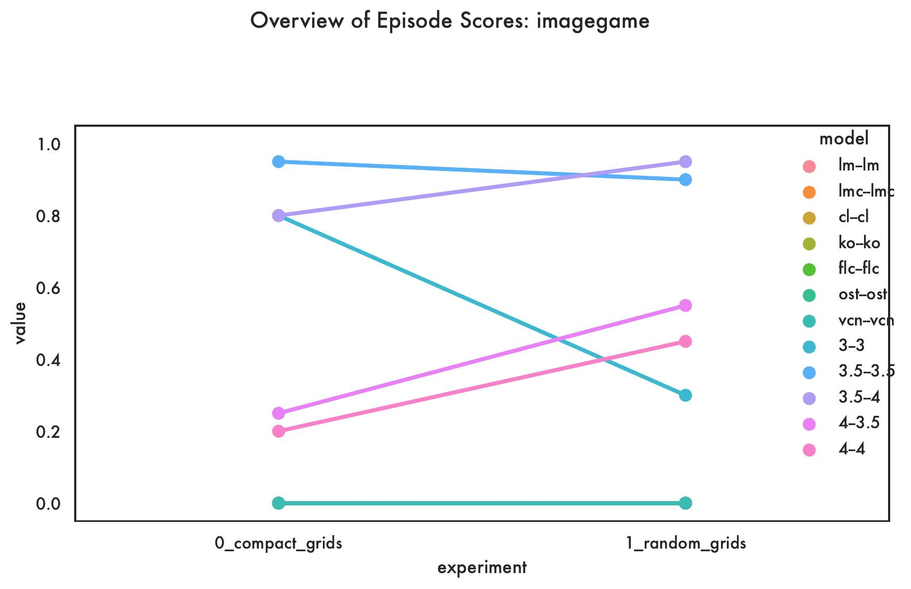
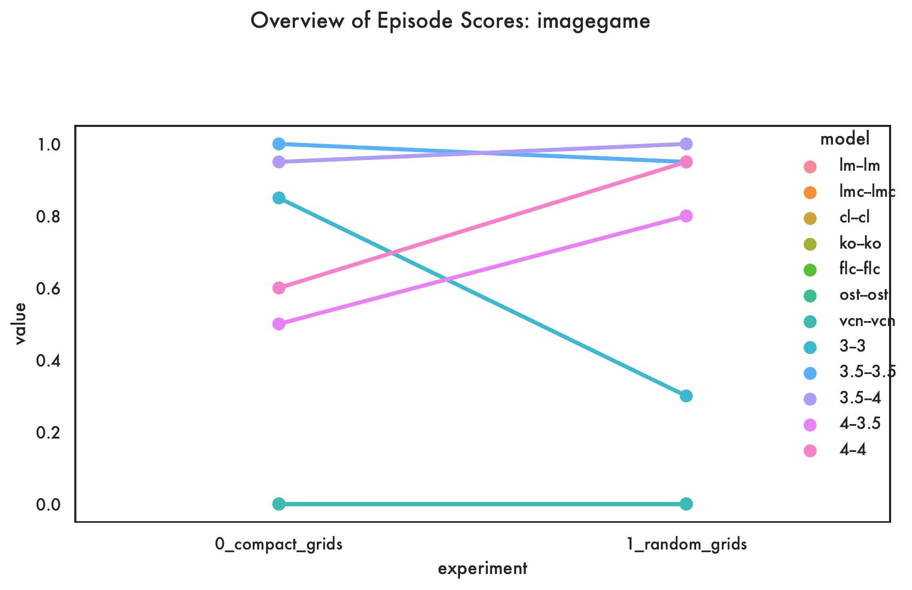
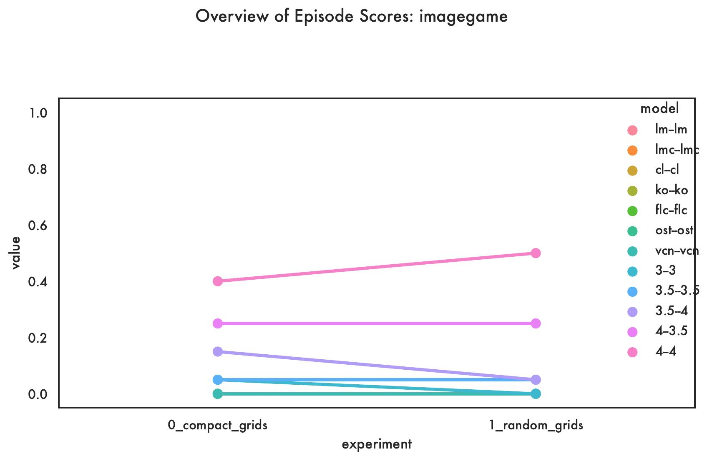

An ASCII Picture Reference Game: images
In this game, the task is to draw a simple grid where Player A (Instruction Giver) needs to instruct Player B (Instruction Follower) how to draw, starting from an empty grid. The Game Master instructs the Player A to generate a referring expression that applies to the given target grid. The expression could include phrases that refer to the group of cells in a certain pattern or a single cell and includes additional information about the letter to be filled with. The Game Master passes the generated instruction to the Player B and instructs it to draw the grid that matches the given expression. In the first turn, the Player B starts initialises a grid with empty cells. An empty cell is indicated by the character “▢”, and a filled cell is an occurrence of any uppercase letter in the alphabet. The Player B applies the given expression to the current state of the grid and returns the result after each turn. The Player A continues to generate expressions until the filled cells in the target grid are described and the Player B keeps updating the current grid incrementally throughout the played turns in the game. The game finishes when Player A generates “DONE”. As a fallback, the game also stops when the number of turns reaches the total number of cells in the target grid.
We experiment with two different settings for datasets in this game called compact and random grids. Each dataset includes 20 different grids resulting in a total of 40 grids, which are 5x5. A compact grid stands for a grid with filled cells that follow a certain pattern. Ideally, such grids can be filled by describing the pattern in a single turn or less number of turns than by describing each filled cell one at a time. Each target grid includes at least five filled cells with the same letter (randomly selected for each instance). We manually defined 20 grids that have certain patterns, e.g. filled as M, cross, two rows are filled, three columns are filled, etc. A random grid is a randomly initialised grid where the cells do not follow a certain pattern when filled. Each target grid includes at least five and at most ten filled cells with the same letter (randomly selected for each instance). The location of each cell is randomly selected.
The main idea for having two different datasets is to test whether the evaluated language models can generate instructions that are compact (Player A side) and whether the generated instruction can be executed to obtain the drawing of the target grid (Player B side). Also, testing with random grids may reveal whether the game can be played with multiple turns by describing each filled cell one turn at a time.
Leaderboard
| Models | Experiment | Aborted | F1 | Lose | Played | Success |
|---|---|---|---|---|---|---|
| 3–3 | 0_compact_grids | 15 | 43.0 | 80 | 85.0 | 5.0 |
| 1_random_grids | 70 | 26.5 | 30 | 30.0 | 0.0 | |
| 3.5–3.5 | 0_compact_grids | 0 | 58.4 | 95 | 100.0 | 5.0 |
| 1_random_grids | 5 | 62.26315789473684 | 90 | 95.0 | 5.0 | |
| 3.5–4 | 0_compact_grids | 5 | 63.36842105263158 | 80 | 95.0 | 15.0 |
| 1_random_grids | 0 | 66.45 | 95 | 100.0 | 5.0 | |
| 4–3.5 | 0_compact_grids | 50 | 88.6 | 25 | 50.0 | 25.0 |
| 1_random_grids | 20 | 76.25 | 55 | 80.0 | 25.0 | |
| 4–4 | 0_compact_grids | 40 | 88.75 | 20 | 60.0 | 40.0 |
| 1_random_grids | 5 | 89.26315789473684 | 45 | 95.0 | 50.0 | |
| cl–cl | 0_compact_grids | 100 | 0 | 0.0 | 0.0 | |
| 1_random_grids | 100 | 0 | 0.0 | 0.0 | ||
| flc–flc | 0_compact_grids | 100 | 0 | 0.0 | 0.0 | |
| 1_random_grids | 100 | 0 | 0.0 | 0.0 | ||
| ko–ko | 0_compact_grids | 100 | 0 | 0.0 | 0.0 | |
| 1_random_grids | 100 | 0 | 0.0 | 0.0 | ||
| lm–lm | 0_compact_grids | 100 | 0 | 0.0 | 0.0 | |
| 1_random_grids | 100 | 0 | 0.0 | 0.0 | ||
| ost–ost | 0_compact_grids | 100 | 0 | 0.0 | 0.0 | |
| 1_random_grids | 100 | 0 | 0.0 | 0.0 | ||
| vcn–vcn | 0_compact_grids | 100 | 0 | 0.0 | 0.0 | |
| 1_random_grids | 100 | 0 | 0.0 | 0.0 |
Detailed results for each model on each experiment for the Image game
Plots
METRIC - Aborted

METRIC - F1

METRIC - Lose

METRIC - Played

METRIC - Success
